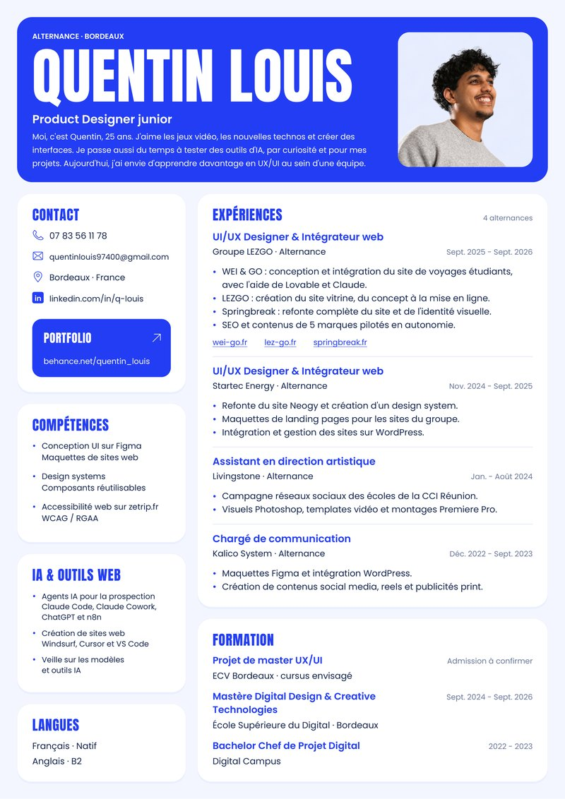

Quentin Louis
Portrait de Quentin Louis. Bordeaux, 25 ans.
- Poste
- UI/UX Designer
- Disponibilité
- Alternance de 2 ans
- Expérience
- 4 alternances depuis 2022
- Formation
- Mastère, ESD Bordeaux
- Langues
- Français, anglais B2
J’aime concevoir des interfaces et des parcours, et ensuite je les intègre moi-même. Passionné d’IA, j’ai aussi créé des agents pour aider les commerciaux dans leur prospection.
01 Travaux
Huit projets
Trois sites en ligne et cinq projets présentés sur Behance. Chaque fiche montre le projet en images.
02 Méthode
Un composant,
deux langues
Ma formation de départ, c’est le développement. Je suis venu au design ensuite, pour pouvoir concevoir ce que j’intégrais. Du coup, dans Figma, je construis mes composants avec leurs états, un peu comme je les coderais. Essayez :
Propriétés
Fond
État
Aperçu : Canvas · 100%
Button/PrimaryAperçu du composant, sans action
Voir le code généré
/* généré depuis les propriétés */
.btn-primary {
--radius: 10px;
--pad-x: 26px;
font-weight: 650;
font-stretch: 100%;
border-radius: var(--radius);
padding: 0 var(--pad-x);
background: var(--ink);
color: var(--paper);
}Je fais ensuite l’intégration moi-même, sur WordPress, Lovable ou Next.js selon le projet. La taille des boutons et le nombre d’étapes dépendent surtout de l’endroit où l’interface sera utilisée. Trois exemples tirés des projets :
- Mobile
Une demande de devis qu’un BDE doit pouvoir faire vite, sans se perdre.
- Lecture
Un livre blanc qu’on lit au scroll, vingt-cinq minutes sans perdre le fil.
- Jeu
Des mini-jeux pensés de l’accueil jusqu’à l’écran de fin, pour faire avancer tout un équipage.
03 Parcours
De La Réunion
à Bordeaux
Quasiment toutes mes études se sont faites sur l’île, et chaque poste en parallèle d’une formation. Je suis parti à Bordeaux pour le mastère, parce que je voulais vraiment faire de l’UI/UX et plus seulement de la com.
CV-Quentin-Louis.pdf

- Formation
Préparation aux métiers du digital
Mission Locale, La Réunion. Le point de départ : les nouvelles technos et les jeux vidéo.
- Formation
BTS développement web
Simplon, pour apprendre les langages du code.
- Alternance
Chargé de communication, Kalico System
Maquettes Figma et intégration WordPress, contenus social media, reels et publicités print. En parallèle du bachelor chef de projet digital (Digital Campus).
- Formation
Master 1 direction artistique
Crealise Réunion, Digital College. Encore trop tourné marketing pour ce que je voulais faire.
- Alternance
Assistant en direction artistique, Livingstone
Campagne réseaux sociaux des écoles de la CCI Réunion. Visuels Photoshop, templates vidéo et montages Premiere Pro.
- 9 250 km
Départ pour Bordeaux
Mastère Digital Design & Creative Technologies à l’ESD Bordeaux, jusqu’en 2026.
- Alternance
UI/UX designer & intégrateur web, Startec Energy
Refonte du site Neogy et création d’un design system, maquettes de landing pages, intégration et gestion des sites sur WordPress.
- Alternance
UI/UX designer & intégrateur web, Groupe LEZGO
Refonte de Springbreak, site WEI & GO, site vitrine LEZGO. SEO et contenus de cinq marques, gérés en autonomie, et accessibilité web de zetrip.fr (WCAG, RGAA).
- À venirFormation
Projet de master UX/UI, ECV Bordeaux
Le cursus que j’envisage, en alternance. Admission à confirmer.
Boîte à outils
- Compétences
- UI/UX web et responsive, design systems et composants réutilisables, accessibilité web (WCAG, RGAA), maquettes et prototypes, agents IA et automatisation, identité visuelle et branding
- Design
- Figma, Photoshop, Illustrator, InDesign, Premiere Pro
- Prototypage et web
- Lovable, Cursor, Windsurf, VS Code, WordPress
- IA et automatisation
- Claude Code, Claude Cowork, ChatGPT, n8n
- Langues
- Français natif, anglais B2
04 Contact
Je cherche une alternance en design UI/UX, à Paris.
Disponibilité : Alternance de 2 ans
quentinlouis97400@gmail.com Cliquez sur le titre pour copier l’adresseTouchez le titre pour écrire